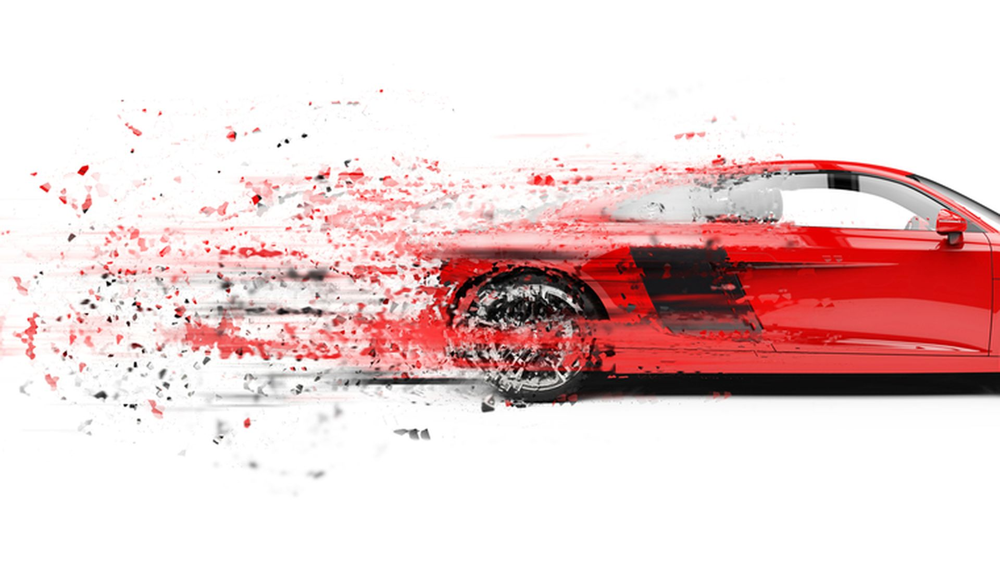

SPEED STAR

Speedstar_services
About_Speedstar
About Speedstar
Is an Botswana multinational automobile manufacture. It was founded by Kingsley Merafhe and incorporated on June 16, 2002.
Speedsstar company Head quaters is located in fairgrounds, twin towers. Address is PO box 1091 Gaborone.
Branches in Botswana are located in Orapa, Molepolole and Kasane.For futher information please contact 77768623 or 544564.
During its early years, the company produced just a few cars a day at its factory on Mack Avenue and later at its factory on
Piquette Avenue in Detroit, Michigan.
History of Speed Star

Speed Star was founded in 2002 by a man called Kingsley Merafhe who wanted to venture into auto mobile manufacturing .
Kingsleys goal was to take road safety to another level and produce some. Another key factor Speed star main focus is on comfortability and functionality.
Speed star introduced methods for large-scale manufacturing of cars and large-scale management of
an industrial workforce using elaborately engineered manufacturing sequences typified by moving assembly lines.
Contact us at:
Email: kingsleytmerafhe@gmail.com
Number: 547567753 or 83472948


Links to Websites
link to services we provide
Speedstar_services
link to about speedstar
About_Speedstar
Our Cars on sale
THE RED Bmw

This Bmw was k swapped for a naturally aspirated v 6 engine
Starting price: P675000
MERCEDES

One of our finest biulds to represent speed